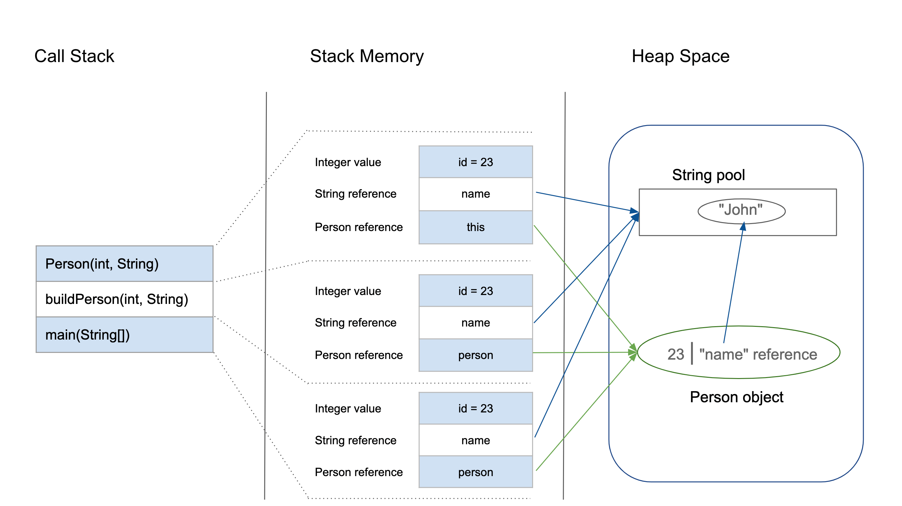
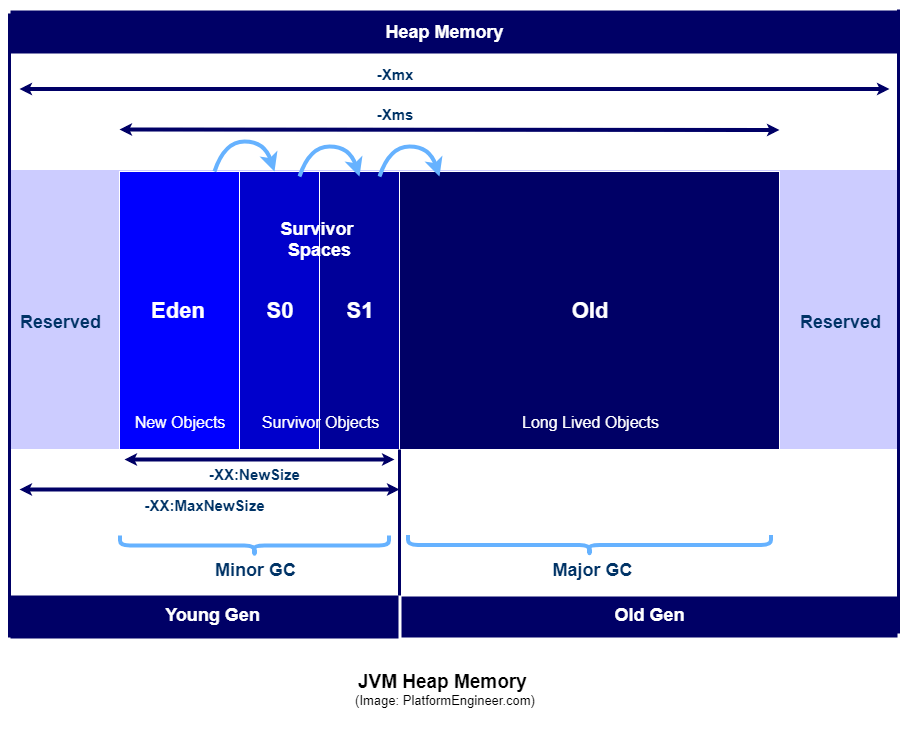
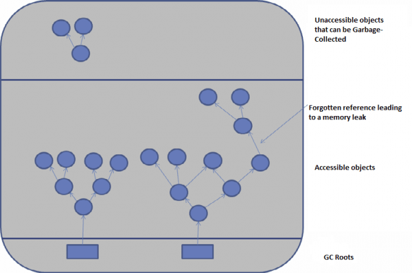
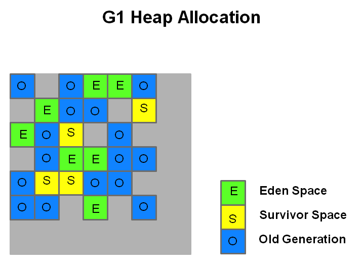
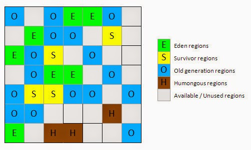
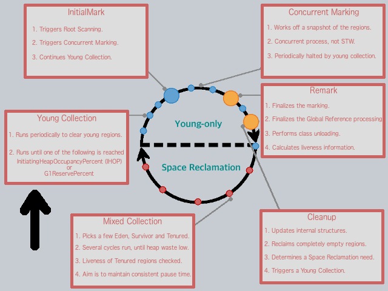
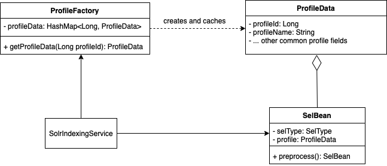

class: center, middle # Sharing on KM's Nightly Indexing Performance --- # Agenda 1. TLDR of KM's Nightly Indexing 2. What is the problem? 3. Quick 101 to Java Memory Model 4. Quick 101 to Java Garbage Collection 5. Attempts made and their results 6. Deeper dive into codes 7. Challenges 8. Learnings (General Principles) --- # KM's Nightly Indexing ## When does it run? - Spring scheduled task at 1am daily, usually would take 4 hours ## What is being indexed ? - Profile: 246,128 - Sel: 1,018,567 - TE: 909,282 - Post: 1,093,383 - All (Searchable fields, Attachments): 5,637,372 ## Indexing Monitoring - Number of errors from job: `index_data` by checking `count_over_time` - Success message logged by checking `absent_over_time` --- # The Problem ## Timeline (insert table) (add elaboration on how did it surface) - failed indexing on grafana > pod died > OOM error > prometheus JVM memory usage exceeded memory limit - as a temporary solution, increased memory to 20Gi --- # Java Memory <p align="center">  </p> | Memory Space | Purpose | What it contains | | --- | --- | --- | | Heap | Used by all parts of the application | Objects and JRE classes | | Non-heap memory: Stack | Used only by 1 thread of execution | Primitives and references to objects | ??? Non-heap memory consists of: - Metaspace (Permanent Generation's successor) - Takes significant portion of JVM's non-heap - Purpose: Store class metadata - Thread memory (stack memory) - Code cache - Purpose: For optimized machine code (store compiled bytecode needed for program's execution) - Garbage collector data - Purpose: To store its data when performing GC on heap --- ## Java Heap Memory <p align="center">  </p> ### KM's configuration ``` -XX:InitialRAMPercentage=80.0 // Initial startup allocated: 16Gi -XX:+MaxRAMPercentage=80.0 // Maximum: 16Gi ``` ??? - Young generation - When eden space is filled with objects, minor GC is performed and all survivor spaces are moved to one of the survivor spaces - Minor GC also checks the survivor objects and move to another survivor space -> At a time, S0/S1 is empty - **Instead of Mark, Sweep and Compact, Minor GC will only perform Mark and Copy** - Objects that survived after many cycles of GC are moved to Old Gen - Implications of minor GC: - Since only short-lived objects, minor GC is very fast and application is not affected - Old generation - Long-lived objects that survived after many rounds of minor GC - Implications of major GC: - All application threads stopped until GC is completed - If is a responsive application, may notice a lot of timeout errors - Takes a long time because need to check the whole heap for all live objects - Duration depends on GC strategy --- # Garbage Collection (GC) - Free-up space by removing dead/unused objects 1. **Marking**: Identifies which objects are in use and not in use 2. **Normal deletion**: GC removes unused objects and reclaim the free space 3. **Deletion with compacting**: After deletion, all the survived objects can be moved closer together --- ## When does GC occur? - Either collected or old enough for promotion, defined by </br> `-XX:MaxTenuringThreshold` (defaults to 15) - **Objects that cannot be reached via the GC roots = Unreachable = Removed during GC** <p align="center">  </p> <em style="color: grey"> 4 main types of GC roots: - Local variables - Active java threads - Static variables and constants - JNI references </em> ??? - `-XX:MaxTenuringThreshold` specifies for how many minor GC cycles an object will stay in the survivor spaces until it finally gets tenured into the old space - GC is most commonly triggered when memory allocation is requested but not enough free memory on hand - **GC cycles are not deterministic and does not occur at a regular cadence** - GC roots: - Class: Classes loaded by a system class loader; contains references to static variables as well - Stack Local: Local variables and parameters to methods stored on the local stack - Active Java Threads: All active Java threads - JNI References: Native code Java objects created for JNI calls; contains local variables, parameters to JNI methods, and global JNI references --- # Garbage-first Garbage Collector (G1GC) - By default from Java 9 onwards, G1GC is used - Goal: To achieve predictable soft-target pause time while being consistent with throughput, defined by `-XX:MaxGCPauseMillis` (defaults to 200ms) --- ## Characteristics - Elastic size of generations - Always sizes the young generation at the end of a normal young collection to meet pause time goals - Override adaptive sizing with heap size flags (e.g.: `-XX:G1NewSizePercent`) <p align="center">  </p> - Non-contiguous generations - Principle: Having as close to 2048 regions as possible where each region is sized as a power of 2 between 1 and 64 MB - Can also override with `-XX:G1HeapRegionSize` - KM's region size: `4.194MB` ??? - The allocation and consumption of space is both non-contiguous and free to evolve as it gains a better understanding of the most efficient young to old ratio. - G1GC favours bigger heap because: - During young GC, G1GC will collect all live objects and copy to survivor/old gen regions and for this copying to happen there should be enough free regions to accommodate aged objects coming from eden regions and if there is less space, it wont have space to stay and compact - In G1, concurrent marking is based on the principle of snapshot-at-the-beginning (SATB). This means, for efficiency purposes, it can only identify objects as being garbage if they existed when the initial snapshot was taken. Any newly allocated objects that appear during the concurrent marking cycle are considered to be live irrespective of their true state. This is important because the longer it takes for concurrent marking to complete, the higher the ratio will be of what is collectible versus what is considered to be implicitly live. --- # Out of memory errors - Heap occupancy grows => GC frequency and pause times grow - Typically, OOM is thrown when: - Java heap itself is out of memory - JVM is spending too much time performing GC --- # Attempts made (Part 1) ## 1. Prevent long-lived objects - Hypothesis - Presence of long-lived objects - Actions done - Modularised indexing <!-- TODO: Add the code snippet --> - Results <!-- TOOD: Add the graph after changes --> --- ## 1. Prevent long-lived objects ### Did it help? - Did not solve the actual problem, high memory usage persisted ### Was it useless then? **No** - Marking and compacting of all objects in a JVM is inefficient - Modularising simplifies and reduces size of object graph => More efficient marking ### Conclusion Based on configuration, no long-lived objects ??? - By focusing on local variables within methods that have a short lifetime so the GC can focus on a subset of the heap that can quickly be handled --- # Attempts made (Part 1) ## 2. Reduce size of live objects - Hypothesis - Live objects are too huge which take up a lot of memory - Actions done - Reduce profile batch size from 25k to 10k <!-- TODO: Add the code snippet --> - Results <!-- TODO: Add the graph after changes --> --- ## 2. Reduce size of live objects ### Did it help? - No significant improvements ### Was it useless then? **No** - It reduces the size of live objects, i.e. at each point of time, the total memory used decreased ### Conclusion - There exist other parts of the application that caused a high memory - Could there potentially be a memory leak? --- # Memory leak ## Troubleshooting methdology 1. Do I have a leak? 2. What is leaking? (which classes) 3. What is keeping objects alive? 4. Where is it leaking from? (code where objects are created and/or assigned) ## Common causes - Static reference chain - _Not relevant for KM_ - Cache (e.g.: Eviction policies) - _Cache that consists of ACL is not growing throughout_ - ThreadLocal - _Not relevant for KM_ - Resource leaks (e.g.: ClassLoader, Connection pools (native resources)) - _No known causes_ - Finalization bugs - _Not relevant for KM_ ??? - Memory leak - There are objects in the heap there are unused, but cannot be GC-ed - Static reference data - Static fields usually have a lifetime as that of the application (unless ClassLoader is eligible for GC) - ThreadLocal - Allows us to store data that will be accessible only by a specific thread - Process: - First, the application borrows a thread from the pool - Then it stores some thread-confined values into the current thread's ThreadLocal - Once the current execution finishes, the application returns the borrowed thread to the pool - After a while, the application borrows the same thread to process another request - Since the application didn't perform the necessary cleanups last time, it may re-use the same ThreadLocal data for the new request - Finalization bug - When a class's `finalize()` is overriden and objects are not instantly GC-ed thus queued for later stage --- # Could there possibly be a memory leak? <!-- TODO: Insert some gc logs and annotate with JVM memory usage graph --> ## Conclusion - Highly unlikely there is a memory leak because after each GC, we see there is drop in memory usage --- class: center, middle # Closer look into the memory usage graph... --- # Prometheus JVM Heap Usage (insert graph and analysis) - Some key points: - Rather constant increase in old generation - No relation between young and old generation usage - Old generation memory usage is the bottleneck: Spiked and almost hit 16Gi --- ## What it means - We would expect these cases: - `Drop in young gen memory usage = Overall drop in JVM heap usage` - This means objects in young generation can be collected and removed - `Drop in young gen = Increase in old gen` - This means that objects survived the minor GCs and are moved to Old gen when passed `MaxTenuringThreshold` age ## Ideal case - Old generation should stay flat under normal circumstances, otherwise it would suggest: - Long-lived objects - Humongous objects --- # Humongous Objects - Humongous objects are objects that **occupy > 50% of region size** <p align="center">  </p> <!-- TODO: If can take from our JFR to see the size --> <p align="center"> <code> Region Size: 4194 KB <br/> Object Size: 12,800 KB > 50% of 4194 KB<br/> Result: Humongous Allocation across 4 regions = 16,776 KB </code> </p> <!--TODO: To consider adding in the different object type sizes --> - They are **directly allocated** in a special humongous regions which are **free, contiguous regions that are part of the Old Generation** - <span style="color: red">They could only be collected through a Full GC</span> ??? - Humongous allocation represents a single object, and as such, must be allocated into contiguous space. This can lead to significant fragmentation. - Directly into old gen because the cost to evacuate and copy such an object across the young generations can be too high. - Humongous allocations always trigger a concurrent marking cycle, whether the IHOP criteria is met or not. - If we want to be certain if humongous allocations are leading to evacuation failures, can use `-XX:+PrintAdaptiveSizePolicy` to see why concurrent cycle was requested --- # Identify possible humongous objects ## Background of Indexing implementation - Index by batches, pivot by profile - **What is then the upper bound size of the Solr beans?** <!-- TODO: Insert code snippet to show areas of considerations --> <!-- TODO: Insert the GC logs which showed: `Pause Young (Concurrent Start) (G1 Humongous Allocation)` --> --- ## Background of Indexing implementation - Contestants: `GenericSearchableBean` and `SelBean` - Here for more information on what `GenericSearchableBean` comprise of: <!-- TODO: add link to wiki searchable results --> <!-- TODO: add the table to show the number of sel--> --- # Attempts made (Part 2) ## 3. Batch number of sel per profile - Hypothesis - List of sel beans created per profile batch is the main player for humongous object - Humongous objects explains why there is a surge in old gen memory usage but no "proportional" decrease in young gen <!-- TODO: add the table that shows the number of sel per profile group (after lower to 10k) --> - Details - Currently, there is an unbounded list of sel per profile group - Actions done - Batch sel to be 1000 per profile batch <!-- TODO: Give example of how it translates with our current 10k profile batch --> <!-- TODO: Insert code snippet to batch sel --> - <span style="color: red">NOTE: We need to be caution how we actually query and limit the size because `_id` in sel collection is `sel id` which means we must query sel and form the sel bean as one</span> --- ## 3. Batch number of sel per profile - Results <!-- TODO: Insert the most recent graphs --> - _Side note: Tried to reduce batch size to an extreme - from 5000 to 100 and we see indexing takes >1 day to be completed_ ### Did it help? - Yes, we see a decrease in Old gen size (and thus overall heap memory usage) - **But we trade-off the time taken to finish because**: - Smaller batch = More database queries = More xxx <!-- TODO: NOW Write more reasons why smaller batch means longer time needed --> - Batch sel means that even with increase in profiles or increase in sel - We bound the number of sel - _Side Note: BUT, recall how sel beans are created -> there is still unbounded size of each `SelBean` e.g.: service, but we do not expect a growing size for each_ <span style="color: blue" class="center"> **How sustainable is this solution?** </span> --- class: center, middle # Let's take a look at our current data and how our data grow... --- # Number of TE in each profile <!-- TODO: Insert the table for #of TE per profile --> # Number of Sel in each profile <!-- TODO: Insert the table for #of Sel per profile --> --- # Number of Te and Sel in profile group <!-- TODO: Insert the table for #of TE and Sel per profile group of 10k --> --- # Number of TE created across 5 months <!-- TODO: Insert the graph for created te --> # Number of Sel created across 5 months <!-- TODO: Insert the graph for created sel --> --- # What does the stats mean? - Expect a growth in sel/te - With a cap in sel, a growing number suggest: - More loops needed per profile batch - Indexing duration will grow together with sel --- ## What is the implication with a growing indexing duration? - Would there be a case it eats into the working hours, the pod that is running indexing may face a higher risk of OOM - There could potentially be a concurrency issue (Slim chance) <!-- TODO: NOW Read if Solr has concurrency issues --> - Less control --- # Next possible steps for considerations ## Tuning of GC <p align="center">  </p> - Considerations: - Allocation - Pause sensitivity - Throughput behaviour - Object lifetime ??? - https://c-guntur.github.io/java-gc/#/3 --- ### Important GC configuration | What | What it means | Actions | | --- | --- | --- | | `G1MixedGCCountTarget = 8` | Target number of mixed GC after a marking cycle to collect old regions | Increases will increase the collection set for old regions| | `G1MixedGCLiveThresholdPercent = 85` | Occupancy threshold for an old region to be included in a mixed GC cycle | Decreases will increase number of eligible old regions to be included in mixed gc | | `G1HeapWastePercent = 5` | Percent of heap that we are willing to waste, i.e when reclaimable percent <span heap waste percentage, mixed GC not initiated| Increases will increase mixed gc from being initiated | | `G1HeapRegionSize = 4194304` | Size of a region = 4.194MB | Increases may prevent humongous objects| | `G1PauseIntervalMillis = 200` | Automatically sizes the young generation to meet this pause goal | Increases may result in more objects to be collected (provided they are not live)| | `G1UseAdaptiveIHOP` | Automatically determines an optimal IHOP by observing how long marking takes and how much memory allocated in the Old Gen during marking cycles | Overrides with a lower % of `InitiatingHeapOccupancyPercent` will cause marking phase to be done earlier| ??? # Taming GC - https://www.oracle.com/technical-resources/articles/java/g1gc.html#Taming # Java heap memory switches | VM Switch | VM Switch Description | |-----------|-----------------------------------| | `-Xms` | Initial heap size when JVM starts | | `-Xmx` | Maximum heap size | | `-Xmn`| Size of young generation, rest to Old Generation | | `-XX:PermGen` | Initial size of Perm Gen memory | | `-XX:MaxPermGen` | Maximum Perm Gen size | | `-XX:SurvivorRatio`| Ratio of eden space and survivor space <br/> (Defaults to 8, i.e. 80% is eden space and 10% for each survivor space) | | `-XX:NewRatio`| Ratio of old and new generation sizes <br/> (Defaults to 2) | --- ### Conclusion: To tune or not to tune GC? - Tuning GC requires changing of JVM flags which may seem simple, BUT: - Requires deep understanding of JVM internals - **Those internals can change in time, so after JDK update, the application may have other performance issues** - <span style="color: blue">Changing application is the way to go!</span> - Full control of code - Does not require deep understanding of JVM internals, after analysis, it can be done by anyone ??? Tuning is a constantly evolving process where we establish a set of baselines and optimal settings through repetitive testing, making incremental changes and re-evaluating until we reach our goals https://krzysztofslusarski.github.io/2020/11/10/humongous.html --- # Next possible steps for considerations ## Reduce object sizes: Flyweight design pattern - Details: Optimization pattern that reduces memory usage of lists of data by caching the common state of data (extrinsic state) <p align="center">  </p> <!-- TODO: Check how preprocess() is done and to edit this diagram to include ACL or other common states --> ??? - Flyweight pattern: https://darrenfinch.com/flyweight-design-pattern-explained-structural-design-patterns/ - Reduce Object Size - Grey area: object fields that hold the result of a calculation based on pieces of data - Should it be better to store the value → memory - Spend time to calculate the value as needed → CPU cycles --- # Next possible steps for considerations ## Efficient indexing ### Parallelize indexing with Java - Details: Indexing can be done in parallel as long as we do not override documents by indexing with the same `_id` - E.g.: The use of `Parallel Streams` <!-- TODO: Consider how to parllelize solr indexing --> ??? - https://www.geeksforgeeks.org/what-is-java-parallel-streams/ --- ## Efficient indexing ### Batch indexing pipeline ??? - https://bikas-katwal.medium.com/design-a-robust-solr-data-indexing-pipeline-and-solr-cloud-setup-best-practices-7a42955d0599 - https://blog.maxar.com/tech-and-tradecraft/2021/scalable-and-dynamic-data-pipelines-at-maxar-part-1 --- # Challenges (insert gitlab issue) ## Monitoring - Memory profiling is currently expensive - Not suitable for production - Alternative technique is to snapshot heap (static analysis) - Memory intensive --- # Good practices ## Check what is the default for JVM flag values - Print final defaults for the JVM with overrides on the defaults `java -XX:+PrintFlagsFinal -version` - Print current flags `java -XX:+PrintCommandLineFlags -version` ## Log GC processes - Generate a GC log - Keep it in a separate file from application output - GC logging has no real observable overhead, should always be on for any important JVM process ``` -Xloggc:gc.log -XX:+PrintGCDetails -XX:+PrintTenuringDistribution -XX:+PrintGCTimeStamps -XX:+PrintGCDateStamps ``` <!-- TODO: NOW Decide if want to include this point on GC logging processes --> ??? # GC - https://learning.oreilly.com/library/view/optimizing-java/9781492039259/ch08.html#pracjavaperf-CHP-8-SECT-1.1 - Provides information on: - When was the young generation garbage collector used? - When was the old generation garbage collector used? - How many garbage collections were run? - For how long were the garbage collectors running? - What was the memory utilization before and after garbage collection? --- # Good practices ## Tools to monitor memory usage - GC logging - Memory profilers - CLI: `jcmd`, `jmap`, `jstat` - GUI: `jConsole`, `VisualVM`, Mission Control, Java Flight Recorder (JFR) - Heap dumps ### Metrics to monitor - How often GC is happening in the JVM - How much memory is being collected each time - Percentage of time spent by JVM for garbage collection - What type of garbage collection happened - minor or full GC? - JVM heap and non-heap memory usage - CPU utilization of the JVM ??? ### Flame graph - Visualizes distributed request trace and represents each service call that occurred during the request’s execution path - Include error and latency data to help identify and fix bottlenecks in applications - Can also visualize code profiling data. - A code profiler analyzes how much time the application code spent on GC, CPU utilization, memory allocation, locks, input/output operations, and other tasks --- # Extra ## General principles - Use less memory Using memory more efficiently: use less heap memory → fewer GC cycles ### Lazy Initialization - Best used when the operation is infrequently used ### Eager deinitialization - Allows the object to be collected more quickly by the GC --- # Good resources - [Red Hat Part 1: Introduction to the G1 Garbage Collector](https://www.redhat.com/en/blog/part-1-introduction-g1-garbage-collector) - [Red Hat Part 2: G1GC Logs Analysis](https://www.redhat.com/en/blog/collecting-and-reading-g1-garbage-collector-logs-part-2) - [Java SE 17 standard options for java](https://docs.oracle.com/en/java/javase/17/docs/specs/man/java.html#standard-options-for-java) - [Java SE 17 G1GC](https://docs.oracle.com/en/java/javase/17/gctuning/garbage-first-g1-garbage-collector1.html#GUID-C268549C-7D95-499C-9B24-A6670B44E49C)